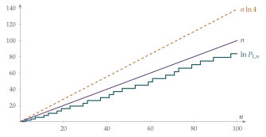

STEP III 2016, Question 5
Read the question before you go on. It is in the STEP Support Programme’s question database: step.maths.org/questions/16-s3-q5
The hook
In Section 1.1 we saw that there are infinitely many primes. But “infinitely many” is a blunt statement. The primes certainly get rarer: there are \(25\) primes below \(100\) but only \(14\) between \(900\) and \(1000\). How rare do they get?
This question proves something that sounds quite modest: if you multiply together all the primes up to \(n\), the answer is less than \(4^n\). But that innocent inequality is the first real step towards answering “how rare?”, and it is the key lemma in one of the most celebrated short proofs in mathematics, by the young Paul Erdős in 1932.
Before you start
The notation \(P_{r,s}\) looks fussy, but the idea is simple: multiply together the primes in a range. Make sure you understand the examples. \(P_{3,7}\) uses the primes greater than \(3\) and at most \(7\), namely \(5\) and \(7\), so it is \(35\).
Part (iv) asks you to prove a statement for all \(n \geq 2\). Part (iii) assumes the statement for every \(k\) up to \(2m\). What kind of induction is that?
It is strong induction: to prove the case \(n\), you may assume all the earlier cases, not just the one immediately before. Keep that in mind; it is why the question is laid out the way it is.
Working it through
Stage 1 A binomial coefficient is not too big
What do you get if you put \(x = 1\) in the binomial expansion of \((1+x)^{2m+1}\)?
You get \[2^{2m+1} = \binom{2m+1}{0} + \binom{2m+1}{1} + \cdots + \binom{2m+1}{2m+1}.\] All the terms are positive, so each one is less than \(2^{2m+1}\). That is not quite good enough; we want \(2^{2m}\), which is half as much.
Pascal’s triangle is symmetric. Which other term in the sum equals \(\binom{2m+1}{m}\)?
By symmetry, \(\binom{2m+1}{m} = \binom{2m+1}{m+1}\), and these are two different terms of the sum (since \(m \neq m+1\)). So \[2\binom{2m+1}{m} = \binom{2m+1}{m} + \binom{2m+1}{m+1} < 2^{2m+1},\] with strict inequality because the sum also contains other positive terms such as \(\binom{2m+1}{0} = 1\). Dividing by \(2\) gives \(\binom{2m+1}{m} < 2^{2m}\).■
Stage 2 Which primes divide that binomial coefficient?
Write the binomial coefficient out: \[\binom{2m+1}{m} = \frac{(2m+1)!}{m!\,(m+1)!} = \frac{(m+2)(m+3)\cdots(2m+1)}{m!}.\]
Let \(p\) be a prime with \(m + 1 < p \leq 2m+1\). Does \(p\) divide the numerator? Can it divide the denominator?
The numerator \((m+2)(m+3)\cdots(2m+1)\) contains \(p\) itself as one of its factors, so \(p\) divides it. The denominator \(m!\) is a product of numbers all smaller than \(p\); since \(p\) is prime, it cannot divide a product of numbers none of which it divides. So \(p\) divides the numerator but not the denominator, and therefore \(p\) divides the whole binomial coefficient (which, remember, is a whole number).
We now know that each prime in the range divides \(\binom{2m+1}{m}\). Why does it follow that their product \(P_{m+1,2m+1}\) divides it too? (Careful: if \(4\) and \(6\) both divide a number, \(24\) need not.)
The difference is that our primes are distinct primes. If distinct primes \(p_1, p_2, \ldots\) each divide \(N\), then their product divides \(N\): write \(N = p_1 N_1\); then \(p_2\) divides \(p_1 N_1\) but not \(p_1\), so it divides \(N_1\); and so on. (This uses the fact that if a prime divides a product then it divides one of the factors. That fact is worth a moment’s respect; Section 1.7 shows a world in which its analogue breaks down.)
So \(P_{m+1,2m+1}\) divides \(\binom{2m+1}{m}\), and since a divisor of a positive number is no bigger than it, \[P_{m+1,\,2m+1} \leq \binom{2m+1}{m} < 2^{2m}. \qed\]
Stage 3 Splitting the product
How can \(P_{1,2m+1}\), the product of all primes up to \(2m+1\), be built from products we already know about?
Split the primes up to \(2m+1\) into those up to \(m+1\) and those above \(m+1\): \[P_{1,2m+1} = P_{1,m+1} \times P_{m+1,2m+1}.\] The second factor is less than \(2^{2m} = 4^m\) by Stage 2. For the first, we are allowed to assume \(P_{1,k} < 4^k\) for every \(k\) from \(2\) to \(2m\), and \(k = m+1\) is in that range (because \(m \geq 1\) gives \(2 \leq m+1 \leq 2m\)). So \[P_{1,2m+1} < 4^{m+1} \times 4^{m} = 4^{2m+1}. \qed\] This is where strong induction earns its keep: to deal with \(2m+1\) we needed the case \(m+1\), which is roughly half as big, not the case just before.
Stage 4 All \(n\)
Part (iii) handles odd numbers. What happens for an even number \(n = 2m+2\)? Is it prime?
Check the start: \(P_{1,2} = 2 < 16\) and \(P_{1,3} = 6 < 64\). Now suppose \(P_{1,k} < 4^k\) for all \(k\) from \(2\) up to \(n-1\), where \(n \geq 4\).
If \(n\) is even, then \(n\) is not prime (it is bigger than \(2\)), so the primes up to \(n\) are the same as the primes up to \(n-1\). Hence \(P_{1,n} = P_{1,n-1} < 4^{n-1} < 4^n\).
If \(n\) is odd, write \(n = 2m+1\) with \(m \geq 2\). Then part (iii) gives \(P_{1,n} < 4^n\) directly.
By strong induction, \(P_{1,n} < 4^n\) for every \(n \geq 2\).■
Looking back
Binomial coefficients carry arithmetic information. \(\binom{2m+1}{m}\) is a single number that is small (less than \(4^m\)) but is forced to be divisible by many primes. Squeezing many primes into a small number tells you there can’t be too many of them.
Strong induction is the natural tool when a problem halves itself. The case \(2m+1\) depended on the case \(m+1\).
Small cases need checking separately. The induction only gets going once \(n \geq 4\), so \(n = 2\) and \(3\) had to be done by hand.
What’s really going on
Take logarithms of the result: \(\ln P_{1,n} < n \ln 4\), that is, \[\sum_{p \leq n} \ln p < (\ln 4)\, n \approx 1.39\,n .\] In the 1850s Pafnuty Chebyshev proved bounds of exactly this kind, above and below, showing that \(\sum_{p \leq n} \ln p\) grows in proportion to \(n\). Gauss, aged about 15, had already guessed from tables that the number of primes up to \(n\) is roughly \(n / \ln n\). This became the Prime Number Theorem, finally proved in 1896 by Jacques Hadamard and Charles de la Vallée Poussin using complex analysis. In its logarithmic form it says \[\sum_{p \leq n} \ln p \sim n,\] so the product of the primes up to \(n\) is roughly \(e^n\). Our bound of \(4^n\) is not far off at all: Figure 1.2.1 shows all three.

Bertrand’s postulate
In 1845 Joseph Bertrand conjectured that for every \(n \geq 1\) there is always a prime between \(n\) and \(2n\). Chebyshev proved it in 1852. Eighty years later, Paul Erdős, aged 19, found a beautiful elementary proof. Its key ingredients are this question’s lemma and a careful look at which primes divide the middle binomial coefficient \(\binom{2n}{n}\). Martin Aigner and Günter Ziegler chose it as Chapter 2 of Proofs from THE BOOK, a collection of the most elegant proofs in mathematics.
Where this goes next
The precise distribution of the primes is controlled by the zeros of the Riemann zeta function, \[\zeta(s) = 1 + \frac{1}{2^s} + \frac{1}{3^s} + \cdots,\] a function you will meet in a much humbler guise in Section 2.4, where \(\zeta(2) = \pi^2/6\). The Riemann Hypothesis, which predicts exactly where those zeros lie, would pin down the error in the Prime Number Theorem as tightly as possible. It is perhaps the most famous unsolved problem in mathematics, and one of the Millennium Prize Problems.
The thinking skill
If the case \(n\) depends on cases much smaller than \(n-1\), assume all earlier cases at once.
The other idea here is subtler and very characteristic of number theory: to show something about all primes in a range, find one object (here a binomial coefficient) that every one of those primes must divide, and that you can also show is not too large.
Try this next
Feel the numbers. Compute \(P_{1,n}\) for \(n = 10, 20, 30\) and compare it with \(4^n\) and with \(e^n\). (A calculator is fine here.)
The middle binomial coefficient. Show that \(\binom{2m}{m}\) is the largest of the \(2m+1\) terms in the expansion of \((1+1)^{2m}\), and deduce that \(\binom{2m}{m} \geq \dfrac{4^m}{2m+1}\).
Not too many primes. Let \(\pi(n)\) be the number of primes up to \(n\). Every prime between \(\sqrt n\) and \(n\) is bigger than \(\sqrt n\), and their product is at most \(P_{1,n} < 4^n\). Deduce that \[\pi(n) - \pi(\sqrt n) < \frac{2\ln 4}{\ln n}\, n ,\] and hence that \(\pi(n) < 2.8\, n/\ln n + \sqrt n\). Compare this with the Prime Number Theorem’s \(\pi(n) \approx n / \ln n\).
Check Bertrand. Verify Bertrand’s postulate for \(n = 1, 2, \ldots, 50\) by finding a prime between \(n\) and \(2n\) in each case. Can you do it efficiently using a short list of primes, each less than twice the one before?
Further reading
Aigner & Ziegler, Proofs from THE BOOK, Chapter 2, “Bertrand’s postulate”.
Marcus du Sautoy, The Music of the Primes (Fourth Estate). A popular history of the Prime Number Theorem and the Riemann Hypothesis.
G. J. O. Jameson, The Prime Number Theorem (Cambridge University Press). Rigorous but gentle, and written for undergraduates; the first chapters need only A-level calculus.